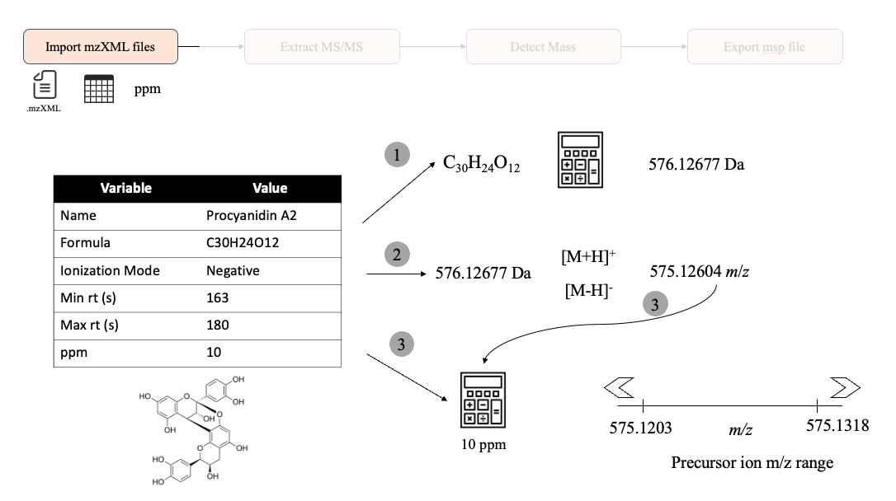
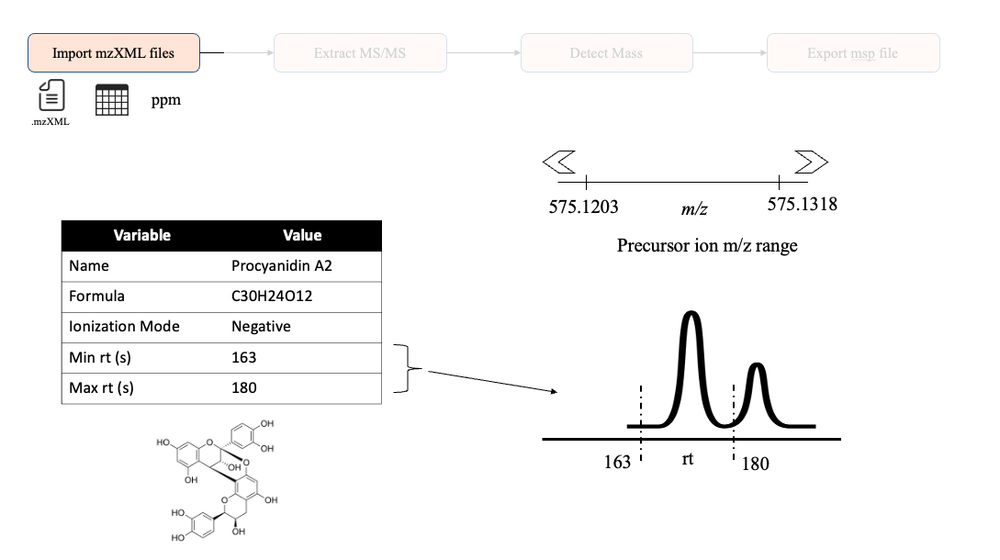
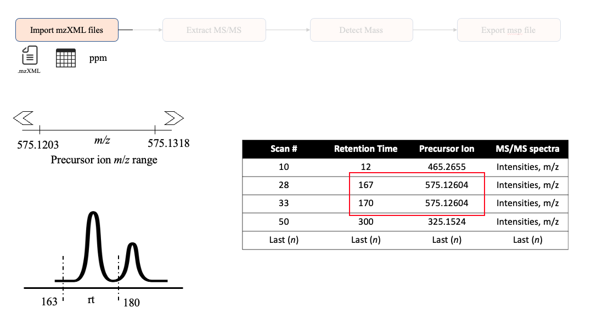

3 - Behind the curtains of importing MS/MS data
Daniel Quiroz, Jessica Cooperstone
Horticulture and Crop Science Department, Ohio State University, USquirozmoreno.1@osu.edu
13 October 2023
Source:vignettes/Cimport_mzml_explanation.Rmd
Cimport_mzml_explanation.RmdGoal of this vignette
The main objective of this document is to explain in a detailed
manner how we import and process MS/MS when you use
import_mzxml().
This document is organized based on the main steps we take to import MS/MS data that are:
- Calculating the theoretical precursor ion,
- Filtering MS/MS scans for a given precursor ion and rt range, and
- Finding the most intense MS/MS scan.
Calculating the theoretical precursor ion
One of the main inputs, besides the .mzML data, is the
met_metadata data frame used in
import_mzxml(). This data frame contains the minimum
information to calculate the theoretical precursor ion m/z
given the following information:
- Chemical formula,
- Ionization polarity, and
- ppm (mass error)
This process can be depicted in the following image.

Here, we are going to use procyanidin A2 to demonstrate this process. (1) First, by using the Rdisop package, we calculate the theoretical monoisotopic mass. (2) Then, given an specific polarity (Positive or Negative), we add or subtract the mass of a proton to calculate the theoretical ion m/z. (3) Finally, we used the provided ppm value (10 ppm by default) to calculate the m/z range that will be used to filter scan that the precursor ion value falls within this range.
You can also calculate this ppm range with
ppm_range()
ppm_range(mz = 575.12604, ppm = 10)
#> [1] 575.1203 575.1318Filtering MS/MS scans
Using retention time region of interest
Although providing a retention time window is not mandatory, it is highly suggested to provide this information to have more control over the regions of the run that we look for the MS/MS scans. If you do not provide a specific rt ROI, this package will look for the most intense scan, even if that do not represent the desired scans from the provided metabolite.

Filtering using m/z range and rt ROI
Then, after calculating the theoretical m/z range, and knowing the rt ROI, we can look in the data for the MS/MS scans that have this information.
If MS2extract do not find at least one MS/MS scan within
the given m/z range and rt ROI, it will stop.
In the following example, the scan in the first row does not meet these requirements, and it is discarded, while the second and third scan falls within these requirements, and are kept for the next steps.

Information about this vignette
Code for creating the vignette
## Create the vignette
library("rmarkdown")
system.time(render("3_import_mzml_explanation.Rmd", "BiocStyle::html_document"))
## Extract the R code
library("knitr")
knit("3_import_mzml_explanation.Rmd", tangle = TRUE)Date the vignette was generated.
#> [1] "2023-10-13 17:51:45 UTC"Wallclock time spent generating the vignette.
#> Time difference of 4.507 secsR session information.
#> ─ Session info ───────────────────────────────────────────────────────────────────────────────────────────────────────
#> setting value
#> version R version 4.3.1 (2023-06-16)
#> os Ubuntu 22.04.3 LTS
#> system x86_64, linux-gnu
#> ui X11
#> language en
#> collate C.UTF-8
#> ctype C.UTF-8
#> tz UTC
#> date 2023-10-13
#> pandoc 2.19.2 @ /usr/bin/ (via rmarkdown)
#>
#> ─ Packages ───────────────────────────────────────────────────────────────────────────────────────────────────────────
#> package * version date (UTC) lib source
#> abind 1.4-5 2016-07-21 [1] RSPM
#> affy 1.78.2 2023-07-16 [1] Bioconductor
#> affyio 1.70.0 2023-04-25 [1] Bioconductor
#> backports 1.4.1 2021-12-13 [1] RSPM
#> bibtex 0.5.1 2023-01-26 [1] RSPM
#> Biobase 2.60.0 2023-04-25 [1] Bioconductor
#> BiocGenerics 0.46.0 2023-04-25 [1] Bioconductor
#> BiocManager 1.30.22 2023-08-08 [1] RSPM
#> BiocParallel 1.34.2 2023-05-22 [1] Bioconductor
#> BiocStyle * 2.28.1 2023-09-14 [1] Bioconductor
#> bookdown 0.35 2023-08-09 [1] RSPM
#> broom 1.0.5 2023-06-09 [1] RSPM
#> bslib 0.5.1 2023-08-11 [1] RSPM
#> cachem 1.0.8 2023-05-01 [1] RSPM
#> car 3.1-2 2023-03-30 [1] RSPM
#> carData 3.0-5 2022-01-06 [1] RSPM
#> cellranger 1.1.0 2016-07-27 [1] RSPM
#> cli 3.6.1 2023-03-23 [1] RSPM
#> clue 0.3-65 2023-09-23 [1] RSPM
#> cluster 2.1.4 2022-08-22 [3] CRAN (R 4.3.1)
#> codetools 0.2-19 2023-02-01 [3] CRAN (R 4.3.1)
#> colorspace 2.1-0 2023-01-23 [1] RSPM
#> desc 1.4.2 2022-09-08 [1] RSPM
#> digest 0.6.33 2023-07-07 [1] RSPM
#> doParallel 1.0.17 2022-02-07 [1] RSPM
#> dplyr 1.1.3 2023-09-03 [1] RSPM
#> evaluate 0.22 2023-09-29 [1] RSPM
#> fansi 1.0.5 2023-10-08 [1] RSPM
#> fastmap 1.1.1 2023-02-24 [1] RSPM
#> foreach 1.5.2 2022-02-02 [1] RSPM
#> fs 1.6.3 2023-07-20 [1] RSPM
#> generics 0.1.3 2022-07-05 [1] RSPM
#> ggplot2 3.4.4 2023-10-12 [1] RSPM
#> ggpubr 0.6.0 2023-02-10 [1] RSPM
#> ggrepel 0.9.3 2023-02-03 [1] RSPM
#> ggsignif 0.6.4 2022-10-13 [1] RSPM
#> glue 1.6.2 2022-02-24 [1] RSPM
#> gtable 0.3.4 2023-08-21 [1] RSPM
#> hms 1.1.3 2023-03-21 [1] RSPM
#> htmltools 0.5.6.1 2023-10-06 [1] RSPM
#> httr 1.4.7 2023-08-15 [1] RSPM
#> impute 1.74.1 2023-05-02 [1] Bioconductor
#> IRanges 2.34.1 2023-06-22 [1] Bioconductor
#> iterators 1.0.14 2022-02-05 [1] RSPM
#> jquerylib 0.1.4 2021-04-26 [1] RSPM
#> jsonlite 1.8.7 2023-06-29 [1] RSPM
#> knitr 1.44 2023-09-11 [1] RSPM
#> lattice 0.21-8 2023-04-05 [3] CRAN (R 4.3.1)
#> lifecycle 1.0.3 2022-10-07 [1] RSPM
#> limma 3.56.2 2023-06-04 [1] Bioconductor
#> lubridate 1.9.3 2023-09-27 [1] RSPM
#> magrittr 2.0.3 2022-03-30 [1] RSPM
#> MALDIquant 1.22.1 2023-03-20 [1] RSPM
#> MASS 7.3-60 2023-05-04 [3] CRAN (R 4.3.1)
#> memoise 2.0.1 2021-11-26 [1] RSPM
#> MS2extract * 0.02.0 2023-10-13 [1] local
#> MsCoreUtils 1.12.0 2023-04-25 [1] Bioconductor
#> MSnbase 2.26.0 2023-04-25 [1] Bioconductor
#> munsell 0.5.0 2018-06-12 [1] RSPM
#> mzID 1.38.0 2023-04-25 [1] Bioconductor
#> mzR 2.34.1 2023-06-19 [1] Bioconductor
#> ncdf4 1.21 2023-01-07 [1] RSPM
#> OrgMassSpecR 0.5-3 2017-08-13 [1] RSPM
#> pcaMethods 1.92.0 2023-04-25 [1] Bioconductor
#> pillar 1.9.0 2023-03-22 [1] RSPM
#> pkgconfig 2.0.3 2019-09-22 [1] RSPM
#> pkgdown 2.0.7 2022-12-14 [1] any (@2.0.7)
#> plyr 1.8.9 2023-10-02 [1] RSPM
#> preprocessCore 1.62.1 2023-05-02 [1] Bioconductor
#> ProtGenerics 1.32.0 2023-04-25 [1] Bioconductor
#> purrr 1.0.2 2023-08-10 [1] RSPM
#> R6 2.5.1 2021-08-19 [1] RSPM
#> ragg 1.2.6 2023-10-10 [1] RSPM
#> rbibutils 2.2.15 2023-08-21 [1] RSPM
#> Rcpp 1.0.11 2023-07-06 [1] RSPM
#> Rdisop 1.60.0 2023-04-25 [1] Bioconductor
#> Rdpack 2.5 2023-08-21 [1] RSPM
#> readr 2.1.4 2023-02-10 [1] RSPM
#> readxl 1.4.3 2023-07-06 [1] RSPM
#> RefManageR * 1.4.0 2022-09-30 [1] RSPM
#> rlang 1.1.1 2023-04-28 [1] RSPM
#> rmarkdown 2.25 2023-09-18 [1] RSPM
#> rprojroot 2.0.3 2022-04-02 [1] RSPM
#> rstatix 0.7.2 2023-02-01 [1] RSPM
#> S4Vectors 0.38.2 2023-09-22 [1] Bioconductor
#> sass 0.4.7 2023-07-15 [1] RSPM
#> scales 1.2.1 2022-08-20 [1] RSPM
#> sessioninfo * 1.2.2 2021-12-06 [1] RSPM
#> stringi 1.7.12 2023-01-11 [1] RSPM
#> stringr 1.5.0 2022-12-02 [1] RSPM
#> systemfonts 1.0.5 2023-10-09 [1] RSPM
#> textshaping 0.3.7 2023-10-09 [1] RSPM
#> tibble 3.2.1 2023-03-20 [1] RSPM
#> tidyr 1.3.0 2023-01-24 [1] RSPM
#> tidyselect 1.2.0 2022-10-10 [1] RSPM
#> timechange 0.2.0 2023-01-11 [1] RSPM
#> tzdb 0.4.0 2023-05-12 [1] RSPM
#> utf8 1.2.3 2023-01-31 [1] RSPM
#> vctrs 0.6.4 2023-10-12 [1] RSPM
#> vsn 3.68.0 2023-04-25 [1] Bioconductor
#> xfun 0.40 2023-08-09 [1] RSPM
#> XML 3.99-0.14 2023-03-19 [1] RSPM
#> xml2 1.3.5 2023-07-06 [1] RSPM
#> yaml 2.3.7 2023-01-23 [1] RSPM
#> zlibbioc 1.46.0 2023-04-25 [1] Bioconductor
#>
#> [1] /home/runner/work/_temp/Library
#> [2] /opt/R/4.3.1/lib/R/site-library
#> [3] /opt/R/4.3.1/lib/R/library
#>
#> ──────────────────────────────────────────────────────────────────────────────────────────────────────────────────────Bibliography
This vignette was generated using BiocStyle (Oleś, 2023) with knitr (Xie, 2023) and rmarkdown (Allaire, Xie, Dervieux, McPherson, Luraschi, Ushey, Atkins, Wickham, Cheng, Chang, and Iannone, 2023) running behind the scenes.
Citations made with RefManageR (McLean, 2017).
[1] J. Allaire, Y. Xie, C. Dervieux, et al. rmarkdown: Dynamic Documents for R. R package version 2.25. 2023. URL: https://github.com/rstudio/rmarkdown.
[2] M. W. McLean. “RefManageR: Import and Manage BibTeX and BibLaTeX References in R”. In: The Journal of Open Source Software (2017). DOI: 10.21105/joss.00338.
[3] A. Oleś. BiocStyle: Standard styles for vignettes and other Bioconductor documents. R package version 2.28.1. 2023. DOI: 10.18129/B9.bioc.BiocStyle. URL: https://bioconductor.org/packages/BiocStyle.
[4] Y. Xie. knitr: A General-Purpose Package for Dynamic Report Generation in R. R package version 1.44. 2023. URL: https://yihui.org/knitr/.